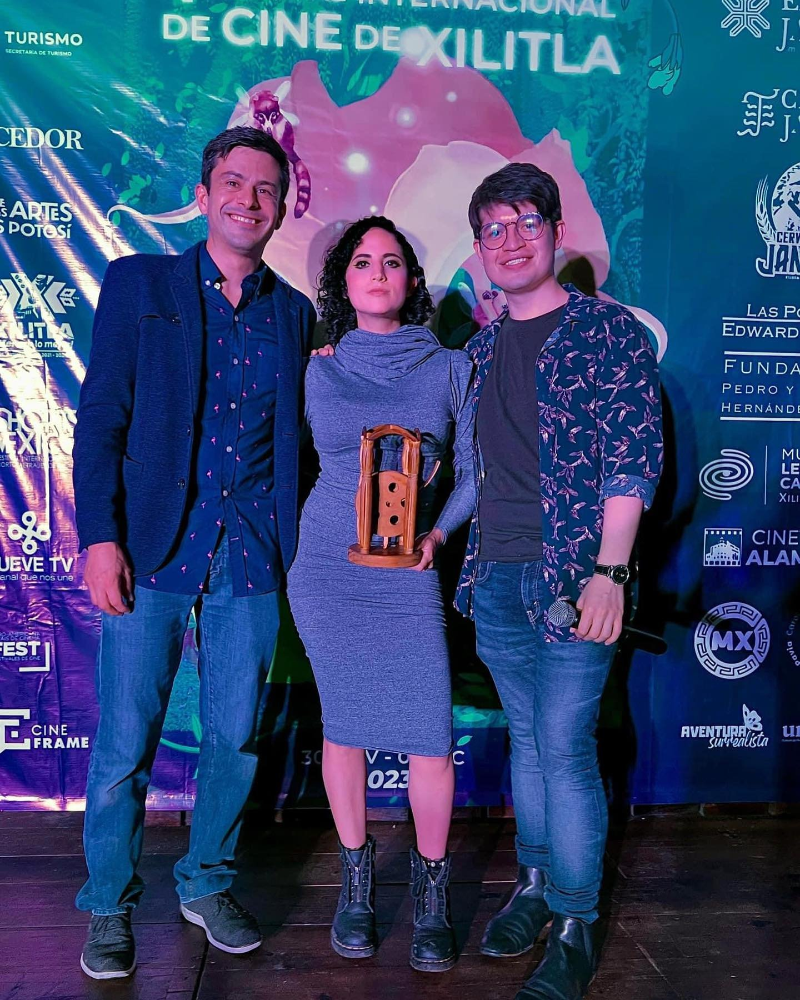

Quiénes somos
El FICXILITLA nació en el 2023 gracias a la iniciativa del empresario mexicano Mario César Ramírez, quien propuso este encuentro en el pueblo mágico de Xilitla, con el objetivo de ser una ventana de exhibición de la cinematografía nacional e internacional.
Xilitla, ubicado en el Estado de San Luis Potosí, es el escenario ideal para esta propuesta ya que dentro de sus paisajes selváticos, se encuentra el Jardín Escultórico de Edward James, por lo que el surrealismo y la magia, se respiran en cada uno de estos rincones de la Huasteca Potosina.
Hemos sido plataforma de nuevas y nuevos talentos al cobijar sus proyectos junto a los de cineastas consagrados, para hacer del FICXILITLA un escenario de creación de industria.
Durante el festival, en nuestra programación contamos con pitchings, conferencias, master clases y talleres impartidos por figuras con trayectoria en el ámbito cinematográfico.
El también llamado “Xilitla Film Fest”, cuenta con competencias nacionales e internacionales para cortometrajes y largometrajes de distintos géneros dentro de la fantasía, los cuales son reconocidos con la Presea James.
Las preseas son otorgadas por un equipo de jurados nacionales e internacionales en los que destacan los nombres de Lena Vurma, Thor Klein, Fernando Delgado, Olivia Portillo y Gabriel Gutiérrez.
Este año, estrenamos una residencia para consolidar proyectos en donde profesionales de la industria, darán seguimiento y asesoría para materializar esos sueños en la pantalla grande.
Apoyados por nuestras sedes, ofrecemos experiencias turísticas, holísticas y gastronómicas a nuestras y nuestros realizadores de forma gratuita para hacer más grata su experiencia dentro de Xilitla.
El FICXILITLA está arropado por la Red Iberoamericana de Festivales de Cine Iberoamericano (REDIBEROFEST) y por UNIFEST. Por los que nuestros proyectos ganadores son exhibidos en otros espacios y festivales durante un año, dando así, una continuidad al apoyo de exhibición del cine mexicano.


